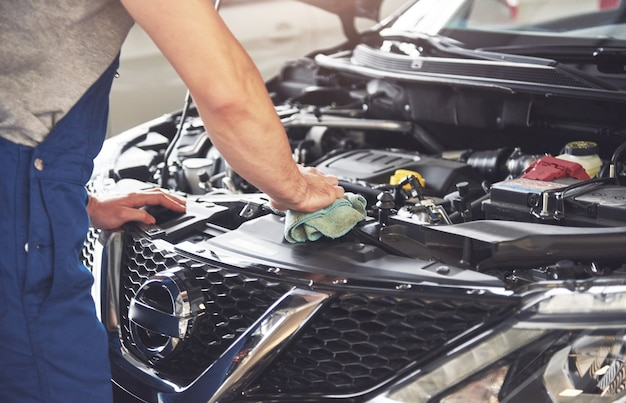
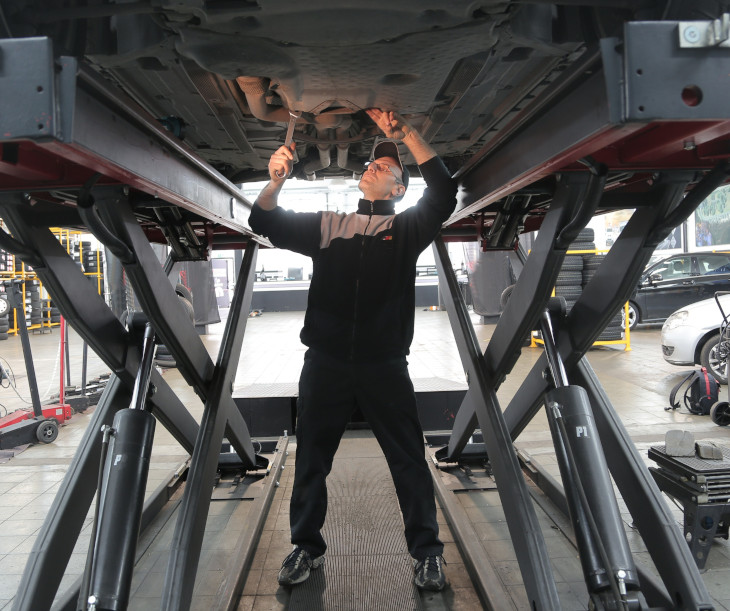

Peças recondicionadas são peças reaproveitadas que quebraram ou que apresentaram defeitos ao longo da sua vida útil. Para utilizá-las novamente, reformam-se os componentes necessários e coloca-se a peça à venda. Essa abordagem reduz bastante o valor das peças, chegando a atingir valores em torno de 25% a 35% do custo de peças novas.
O processo de recondicionamento segue as seguintes etapas:
desmontagem da peça por qualquer empresa;
reparo dos componentes que falharam ou sofreram danos;
realização de acabamento para melhorar o visual da peça;
venda da peça recondicionada.
Produtos e peças remanufaturadas apresentam um grau diferente de qualidade quando comparados a componentes recondicionados. Essas também são peças que já foram utilizadas por um determinado período de tempo, mas, por conta da quebra de algum componente a qual elas faziam parte, tem-se a oportunidade de reutilizá-las.
O processo de remanufatura segue as seguintes etapas:
desmontagem da peça utilizada pela empresa original ou autorizada;
determinação do estado de conservação dos componentes;
descarte de componentes com defeitos ou fora dos padrões de remanufatura;
substituição por componentes novos ou remanufaturados;
venda da peça remanufaturada de acordo com as especificações e garantia original.
- 
- 
-

Quais as vantagens de comprar peças usadas?
Todas as peças comercializadas estão em perfeitas condições e possuem rastreabilidade elegendo sua procedência e garantia. Além do custo ser até 60% menor que a venda em concessionárias, as peças usadas diminuem a emissão de CO2 no meio ambiente.
Como realizar a compra de peças usadas?
As peças serão vendidas diretamente aos clientes finais, sendo pessoas físicas ou pessoas jurídicas, bem como a revendedores, como lojistas, oficinas e frotistas, que terão acesso às peças pela loja física e online
Como realizar a compra de peças usadas?
As peças serão vendidas diretamente aos clientes finais, sendo pessoas físicas ou pessoas jurídicas, bem como a revendedores, como lojistas, oficinas e frotistas, que terão acesso às peças pela loja física e online
Como a Dreams avalia as peças antes de comercializar?
Nossos técnicos classificam as peças em três categorias: A (em perfeito estado) e B (com pequenas avarias estéticas), que serão comercializadas, e C (sem condição de reaproveitamento), que serão encaminhadas para o fabricante ou vendidas como sucata para serem processadas e transformadas em matéria-prima.
Como a Dreams avalia as peças antes de comercializar?
Nossos técnicos classificam as peças em três categorias: A (em perfeito estado) e B (com pequenas avarias estéticas), que serão comercializadas, e C (sem condição de reaproveitamento), que serão encaminhadas para o fabricante ou vendidas como sucata para serem processadas e transformadas em matéria-prima.
Como são escolhidos os veículos para desmontagem?
A Dreams comprará veículos apenas da seguradora Porto Seguro e sob demanda do balcão, com baixa permanente no DETRAN, ou seja, veículos que não podem mais voltar para circulação, e sempre com emissão de Nota Fiscal.
Peças recicladas com garantia e responsabilidade ambiental
Orçamento
Reciclagem de peças
A cada dia entram mais veículos em circulação no Brasil. E quanto mais veículos nas ruas, mais carros saem de circulação também, seja por batidas, roubos ou, simplesmente, por envelhecer. A idade média da frota brasileira é de 13 anos. E o que acontece com esses carros que saem das ruas? Em termos de reciclagem, quase nada.
Enquanto nos Estados Unidos 95% dos carros que saem de circulação são reciclados, aqui esse percentual cai para apenas 1,5%. Muitos veículos acabam em desmanches e aterros, na maior parte das vezes ilegais, colocando em risco a natureza devido ao descarte inadequado de peças e resíduos. Além de colocar em risco o meio ambiente, também é um grande desperdício. Um único veículo pode ser reaproveitado e reciclado em até 95%. Se considerarmos que, no Brasil, existem quase 10 milhões de carros em situação de reciclagem, é um grande mercado que pouco foi explorado.
As peças em ótimo estado ou com pequenos defeitos voltam para o mercado, com procedência e garantia. Já as peças e os componentes que não podem ser reaproveitados são reciclados por parceiros especializadas. Tudo isso sem perder o compromisso e a responsabilidade com o que é mais importante e para todos: cuidar do nosso planeta.